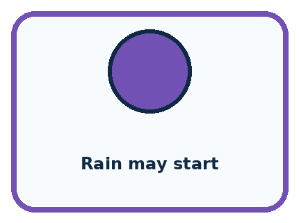
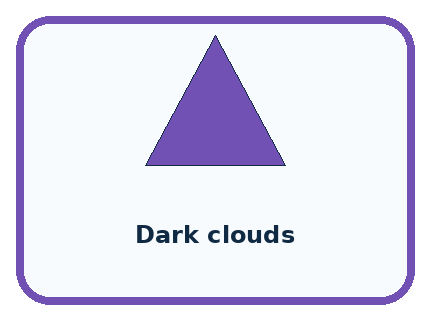
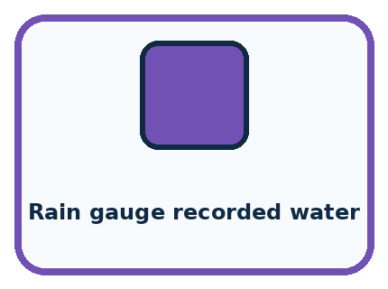
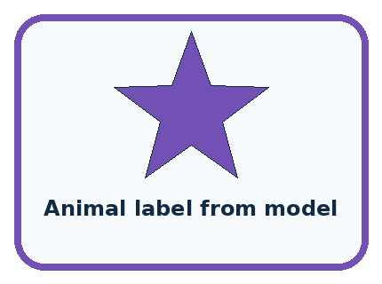

AI Academy · Level 1 · Grade 6 · Week 17 · Student lesson
Prediction Is Not Fact
Learn to understand, design, build, test and explain AI systems responsibly.
Project: Helpful Classroom Sorter
THE CONNECTED WEEK
Save the prediction. Check the separate evidence.
Trace ramp and drying records, preserve mismatches, and report assessed cases alongside unresolved observations.
Keep one habit: Link the case → save the output → apply the observation rule without rewriting either record.
Main lesson · Section 1
What checks a prediction?
Keep the model output, later evidence and comparison status separate for the same case.
Start with a correctly computed wrong prediction
A rule can produce exactly the output its instructions require while that prediction disagrees with a later observation. Save both records so you can check what happened instead of rewriting the prediction.
Retrieve the unresolved-record question
A model predicts far, but the distance record is unreadable. Can this case be called correct? What evidence would let you check it?
Close your notes first. A rough first answer helps us choose the right starting point; it is not a score for your ability.
After trying, check the relevant lesson or ask your teacher. Change the part of your explanation that the evidence shows was wrong.
By the end, you can…
I can separate a recorded prediction from the observation used to check it.
I can compare matching cases using a stated outcome rule and preserve unresolved evidence.
I can report checked results without counting missing observations as successes or failures.
Earlier wording, alternatives and picture transcripts
Your learning target
Remember before reading
Without opening the old lesson, explain one key idea from Boundaries and 'Not Sure'. Give an example and a mistake that the idea helps you avoid.
Without opening the old lesson, explain one key idea from Build a Human Classifier. Give an example and a mistake that the idea helps you avoid.
Without opening the old lesson, explain one key idea from Repeating Efficiently. Give an example and a mistake that the idea helps you avoid.
A prediction is a fallible output supported by clues.

LEARNING TARGET On Monday a team predicts 'rain on Tuesday'. On Tuesday they count a damp playground as success, although sprinklers ran. Write an observation rule that could have been agreed before Tuesday.
Learner name:
Readiness for the connected explanation
This week’s end goal
By the end, I can keep predicted and observed outcomes separate and audit a disagreement.
Main lesson · Section 2
Use separate prediction and observation rules
Ramp height generates a prediction; later travel distance provides different evidence.
State the comparison protocol
A prediction states what a model outputs. An observation records what was measured or happened. To check a prediction, keep both records and compare the same case under the same outcome rule.
Writing a prediction into the observation column would make the check circular.
Read Ramp1 and its outcome rule
Use a fictional ramp investigation. Before each trial, Ramp1 predicts far for a ramp height of at least 6 cm and near otherwise. Its allowed heights are whole centimetres from 1 through 10.
After a toy rolls, a learner measures its travel distance. The outcome rule is far for a distance of at least 4 floor units and near otherwise. Ramp height and travel distance are different quantities.
Keep the fictional records linked by trial ID
The values in this lesson are invented practice records, not a physical law about ramps. Ramp1 is a fixed paper model for learning how to check predictions.
Each trial has an ID so that its height, prediction and later measurement stay together. Keep the model version and record the prediction before opening the observation card.
Explain the two measurements
Which quantity is the prediction input, and which later quantity determines the observed category? Explain why a trial ID, model version and saved pre-observation prediction are needed.
Earlier wording, alternatives and picture transcripts
PICTURE STORY
Look Closely Before You Explain
Pictures give clues; evidence tells us what the clues mean.

MYSTERY A rain prediction uses weather clues, but the later observation of rain or no rain is the fact that evaluates it.
What do you notice?
Name three visible details without explaining them yet.
Circle the detail most connected to the system's decision.
Name one detail that may be decoration or distraction.
Make a first prediction and state the clue that supports it.
My observations, prediction, and evidence:
GOOD THINKING A prediction can change when stronger evidence appears.
A closer explanation
Main lesson · Section 3
A mismatch preserves two different records
Use the original prediction even when later evidence disagrees.
Compare the three established ramp trials
Two records meet at a comparison
Explain B’s mismatch without editing its history
For B, the input 6 cm produces the prediction far. The later distance of 3 units produces the observed category near. This is a mismatch. Retain far as the original prediction and near as the observed category.
Changing the old prediction to near would hide the mistake rather than improve the original result.
Limit what A and C’s matches establish
For A and C, the categories match. These two matches provide evidence about these trials. They do not show that every future prediction will be correct.
Even a correctly computed prediction can disagree with an observation because following the model rule and matching the world are different checks.
Explain one comparison
Point to the input, the deciding step and the result in this week’s visual. Explain the same step in ordinary words. A picture helps when you can say what each part represents.
Earlier wording, alternatives and picture transcripts
VISUAL MECHANISM
Input → Process → Output
Follow the information instead of imagining magic inside the machine.


INPUT available evidence
PROCESS use a rule or model to estimate an unseen outcome
OUTPUT prediction that must remain separate from verified fact
CORE IDEA A prediction is a fallible output supported by clues.
UNDER THE HOOD Prediction estimates a target that is unknown at decision time. Evidence supports the estimate; ground truth is the later or independently established outcome.
Treating predictions as labels can create self-confirming records.
Draw a fresh example with all three stages:
A closer explanation
Connect the picture and the explanation
Main lesson · Section 4
Compare predictions, observations and evidence claims
Ask what was recorded before the outcome and what evidence checks it afterwards.
Pictures paired with their evidence


The case to investigate
CASE 1 — Rain may start Clue: forecast output. Meaning: prediction.


The case to investigate
CASE 2 — Dark clouds Clue: observed condition. Meaning: evidence.


The case to investigate
CASE 3 — Rain gauge recorded water Clue: later measurement. Meaning: fact for evaluation.


The case to investigate
CASE 4 — Animal label from model Clue: unverified output. Meaning: prediction, not fact.
Discuss the confusing pair
Which two pictures are easiest to confuse? What evidence separates them?
Keep the limit in view
BOUNDARY Do not copy a model prediction into the answer column and later call it ground truth.
Earlier wording, alternatives and picture transcripts
PICTURE GALLERY
Four Cases, Four Clues
Use the visual cue, then read the evidence carefully.
CASE 1 — Rain may start Clue: forecast output. Meaning: prediction.
CASE 2 — Dark clouds Clue: observed condition. Meaning: evidence.
CASE 3 — Rain gauge recorded water Clue: later measurement. Meaning: fact for evaluation.
CASE 4 — Animal label from model Clue: unverified output. Meaning: prediction, not fact.
Change one thing in the pictured case
Change: Keep score 4 but measure exactly 8 minutes.
Prediction: The observed label becomes quick and agrees with the prediction.
Reason: Above 8 is strict: equality is quick under this policy.
Main lesson · Section 6
The prediction input is not the observed outcome
This separate drying demonstration uses a moisture-score model and a later time measurement.
The two rules and supplied trial
A fictional drying trial uses a fixed rule and later measures what actually happened.
Model D predicts slow when moisture score is at least 5; quick otherwise.
Observation policy: slow if drying takes above 8 minutes; quick otherwise. Trial T has score 4 and measured time 9 minutes.
Compare the two recorded quantities


Trace prediction and later comparison


Explain what each record establishes
The moisture score generates a prediction; it is not the observed drying time. The later measurement supplies separate evidence under the stated observation policy. Save both values and their units.
Altering the recorded time to match D would destroy the evaluation rather than repair the model.
Predict the equality outcome
Before checking, keep moisture score 4 and model D unchanged, but use a supplied measured drying time of exactly 8 minutes. Apply the strict above-8 outcome policy and compare with the saved model prediction.
Check the changed observation


Limit a single match or mismatch
One failure does not prove every prediction is wrong; one agreement does not establish reliability on future trials.
Identify which field changes which category
Read the labelled picture: Which field changes the observation label, and which field changes the model prediction?
Earlier wording, alternatives and picture transcripts
WORKED EXAMPLE
Watch the Reasoning, Not Just the Answer
Every step connects a claim to observable evidence.

CASE A rain prediction uses weather clues, but the later observation of rain or no rain is the fact that evaluates it.
STEP 1 — OBSERVE available evidence
STEP 2 — TRACE use a rule or model to estimate an unseen outcome
STEP 3 — CONCLUDE prediction that must remain separate from verified fact
MODEL REASONING Mark model or rule outputs as predictions, observable clues as evidence, and independently checked outcomes as facts.
A prediction becomes evaluated against a fact; it does not become a fact merely because time passes.
DO NOT OVERCLAIM Do not copy a model prediction into the answer column and later call it ground truth.
What new evidence could change this answer?
A closer explanation
| Record | Evidence available | Status under the outcome rule |
|---|---|---|
| D: height 5 cm; predicts near | Distance missing | Unassessed; request the trial record |
| E: height 7 cm; predicts far | Two records say 3 and 4 units | Unassessed; investigate the conflict |
| F: height 6 cm; predicts far | Verified distance exactly 4 units | Match; at least 4 includes 4 |
For E, 3 units means near and 4 units means far. The disagreement can change the judgment. Check the trial ID, original measurement and recording procedure. Do not choose the distance that makes Ramp1 look better.
If the conflict cannot be resolved, retain both reports and mark the comparison unassessed.
An observation is evidence, not an automatic guarantee of truth. A wrong trial ID, unclear unit or copying error can make the comparison unreliable.
If a supported correction is made, retain the original entry, the correction, its source and the reason. Remeasuring a new trial does not reveal what happened in the old one.
Learn from the worked case
Cover the result before checking it. Say what is given, choose the procedure, and follow one step at a time. Then uncover the result and explain your first mismatch. Ask why a step is allowed, not only what number it produces.
A pictorial worked case: Prediction Is Not Fact
The facts we will use


Read the picture one step at a time
Why this result follows
What this example does not establish
Change one thing: Keep score 4 but measure exactly 8 minutes. Predict the result before checking the explanation. What remains the same?
Main lesson · Section 7
Investigate a mismatch without rewriting the old prediction
Check IDs, input, calculation and outcome evidence before identifying the cause.
Choose the stage to inspect from the record
Start a mismatch investigation by checking the input, trial ID, prediction calculation and observation procedure. A mismatch alone does not identify which part caused the problem.
If all records are sound, this case is evidence that the model prediction did not match the outcome.
Keep a revised model in a new version
If you revise the model after seeing B, record a new version. A new prediction for B can help explain the change, but it is no longer a check on an unseen case.
Preserve Ramp1’s result and use new reserved trials to evaluate the revised version, following Week 15’s method.
Repair a rewritten perfect-score claim
CLAIM A A confident prediction is a fact.
CLAIM B Evidence and prediction are two words for the same thing.
STRONG ANSWER FRAME I claim ______ because the evidence shows ______. The process is ______. One limit is ______.
Earlier wording, alternatives and picture transcripts
COMPARE
Same Result, Different Reason
A comparison helps reveal the true concept boundary.
| Case | Evidence | What it shows |
|---|---|---|
| Rain may start | forecast output | prediction |
| Dark clouds | observed condition | evidence |
| Rain gauge recorded water | later measurement | fact for evaluation |
| Animal label from model | unverified output | prediction, not fact |
Repair two tempting claims
Repair:
Repair:
A closer explanation
Main lesson · Section 8
Practise: include unassessed cases in the report
A missing or conflicting outcome is not an established success or failure.
Count A through E with the stated assessed denominator
Consider only trials A through E. Three have established outcomes: A, B and C. Two of those three predictions match and one does not. D and E are unassessed.
Report two matches out of three assessed trials, with two more trials unassessed. Do not report four successes by treating the unknowns as correct, or two out of five as if every trial had a known outcome.
Limit the result to the assessed group
The missing cases might be different from the checked cases. The result describes the assessed group; it does not settle performance on all five or on future trials.
Collect the missing evidence where possible, document what remains unknown, and keep the original model version visible. Week 23 will develop performance fractions more fully.
Use W2 to check the observation boundary
Use workbook W2 for the connected example “Predictions and observations”. First fill the input and rule boxes. Try the middle steps before asking for a hint. After a hint, try the next step yourself.
| Plan | Do | Check |
|---|---|---|
| What is given? Which rule or procedure applies? | Record each intermediate step. | Does the result follow? What remains unknown? |
Explain your trace to a partner. Your partner points to one step to check. Swap roles on the next case. Each person writes their own explanation.
Challenge “correct execution proves prediction correctness”
Use the worked case for Predictions and observations. Proposed explanation: “Running the rule correctly proves the prediction correct”. Decide whether this explanation is supported.
Point to the step or supplied fact that decides; explain your repair if needed.
Answer on your own before discussion. If you are unsure, say which step you need help with.
Return to the two drying fields
Which field changes the observation label, and which field changes the model prediction?
This is supported practice. Keep the separately named independent case for an attempt before feedback.
Earlier wording, alternatives and picture transcripts
GUIDED PRACTICE
Try It, Check It, Explain It
Use support now so you can succeed independently later.

Explain how the picture story demonstrates this idea: A prediction is a fallible output supported by clues.
Use a fresh example to explain prediction.
Trace a new input → process → output example.
Find and repair the error in: Evidence and prediction are two words for the same thing.
Invent one edge case and name the safe response.
PARTNER CHECK Point to the evidence. Do not accept an answer that only repeats the vocabulary word.
A closer explanation
Practise with less help: Check a boundary without changing the rule
Check your reasoning
Explain the picture
Main lesson · Section 9
Investigate prediction and evidence records
Use four cases with a match, mismatch, missing observation and conflicting observations.
The model, outcome policy and inputs
Use fictional CartC records. The model accepts whole push scores 1–5, predicts FAR at score 3 or more and NEAR otherwise. A later measured travel distance gives observed FAR at 5 floor units or more and NEAR otherwise. Trial inputs: A=2, B=3, C=4, D=5. Save every prediction with its trial ID before opening the observation cards below.
Save predictions, then compare the evidence
After saving predictions, reveal the observation cards. For each trial, distinguish its predicted category, supplied measurement evidence, observed category if established, and match/mismatch/unassessed status. Report matches out of assessed cases and name the unassessed count. Preserve conflicting reports and request the matching original trial record.
Open the observation cards after predicting
Supplied observation cards for this paper exercise: A travelled 4 units; B travelled 4 units; C has no distance record; D has conflicting records of 4 and 6 units. These are fictional records, not measurements you have performed.
Keep comparison statuses and report limits
Keep a normal case and an edge case clearly separated.
Record what happened—even when it does not match your prediction.
Explain the result, one limitation, and the next useful test.
| Case | Prediction | Observed result | What it means |
|---|---|---|---|
| Normal | |||
| Edge |
Before trying: what do I expect, and why? While trying: which step could first go wrong? Afterwards: what did I actually observe, and what should change? Keep “not run” if you only traced the procedure.
Earlier wording, alternatives and picture transcripts
EXPLORER LAB
Prediction-Evidence-Fact Sort
Predict first, test honestly, and explain what the evidence means.

State your prediction before the result is known.
Complete the task: Separate prediction, evidence, and fact in four scenarios.
INDEPENDENCE After support is removed, repeat the proof with a fresh case.
Plan → try → check
Main lesson · Section 14
Try alone: compare the new Dry1 trials
Apply the new score threshold and strict drying-time outcome rule, retaining missing evidence.
The new rules and records
In a fictional paper test, Dry1 predicts slow for a moisture score of at least 7, quick otherwise. Allowed scores are whole numbers 1 through 10.
The observed outcome is slow if drying time is greater than 10 minutes, quick otherwise. Records are P: score 6, time 12; Q: score 7, time 10; R: score 9, time 14; S: score 5, time missing.
Record all predictions, observed categories and comparison statuses. Summarise matches out of assessed cases, name the unassessed count, and limit the conclusion.
Keep one first attempt
Attempt this case before feedback. Record any help. Earlier examples below are further practice; a case already practised with feedback cannot establish fresh transfer.
Your teacher has the independent answer and scoring criteria. Complete the matching workbook week to keep your practice evidence together.
Use feedback afterwards
Attempt the independent case before hints. Record whether you worked alone, used a hint or followed a model. After feedback, fix the first unsupported step and explain why it changed.
A later check uses a changed case, not a copied answer.
Earlier wording, alternatives and picture transcripts
Independent case: Transfer the check to drying predictions
Week 17 Independent application
Close the worked explanation. Apply the idea to this different question without copying.
A model predicts rain tomorrow. Tomorrow is dry. Was the prediction an observation of tomorrow? Explain what new evidence settles the result.
My answer, with a trace, calculation or supporting evidence
Create and test
Change one relevant detail. Predict the result before testing. Include a boundary or missing-information case when it helps reveal a limit.
My changed input and expected result
Connect to your project
Label the sorter's suggested bin as a prediction until a human confirms the final placement.
The evidence I will keep
Transfer practice from the original programme
On Monday a team predicts 'rain on Tuesday'. On Tuesday they count a damp playground as success, although sprinklers ran. Write an observation rule that could have been agreed before Tuesday.
Use feedback to improve
Main lesson · Section 11
Keep sorter predictions before checking placement
Retain disagreements and the evidence used to investigate them.
This week’s project decision
THIS WEEK'S CHECKPOINT Label the sorter's suggested bin as a prediction until a human confirms the final placement.
In sorter trials, record predicted categories before collecting reference evidence, then retain disagreements for investigation.
Plan IDs, predictions, checks and review
What real classroom need does this serve?
What information is necessary—and what should stay private?
What happens inside the process?
What normal and edge cases will you test?
When should it say not sure or ask a person?
Keep the comparison record independent of the prediction
RESPONSIBLE DESIGN Do not copy a model prediction into the answer column and later call it ground truth.
Earlier wording, alternatives and picture transcripts
PROJECT
Helpful Classroom Sorter
Build one coherent system across the year, one evidence-based decision at a time.


My project decision:
Evidence for your project
Main lesson · Section 16
Finish: report the assessed and unresolved evidence
Close your notes and explain the model output, outcome rule and limits of the comparison.
Your exit explanation
Close your notes. Explain this goal in your own words: Separate a recorded prediction from the observation used to check it
Choose support and revisit later
If you are unsure, return to the worked picture and explain one arrow. If you are ready, change an input or assumption and justify your prediction.
Save your workbook evidence. At the next review, try a different case before opening your old answer.
Reference bank and extra practice
Choose the reference that helps your next step.
Your quick word guide
Reference · Section 5
Your quick word guide
Use the words to explain a particular step, record or limit.
Core vocabulary
| Word | Meaning | My example |
|---|---|---|
| prediction | estimate about an unknown outcome | |
| evidence | information that supports or challenges a claim | |
| fact | claim established by direct or reliable checking | |
| ground truth | reference outcome used to evaluate a prediction |
Terms for the connected explanation
| Word | Meaning |
|---|---|
| Observation | A recorded measurement or event used as evidence |
| Outcome rule | The agreed method for turning observed evidence into the category being checked |
| Mismatch | A prediction that differs from an established comparison outcome |
| Unassessed | A case whose prediction has not yet been judged against adequate outcome evidence |
Repair a claim using a word
CLAIM TO REPAIR A confident prediction is a fact.
Use one vocabulary word and one piece of evidence to repair it:
Earlier wording, alternatives and picture transcripts
VOCABULARY
Words You Can See and Use
The badge is a memory cue; the definition does the real thinking work.


Misconception detective
WORD POWER A strong definition helps you decide something in a new case.
Words used in the closer explanation
Choose a stronger thinking challenge
Reference · Section 10
Choose a stronger thinking challenge
Choose the next useful challenge rather than treating the whole ladder as compulsory.
Pick your next step
RECALL Define prediction.
EXPLAIN A prediction is a fallible output supported by clues.
TRACE Show the input, process, and output.
DIAGNOSE Repair: A confident prediction is a fact.
TRANSFER Apply the idea to a new home or classroom case.
CREATE Design one revealing test.
DEFEND Give a claim, evidence, mechanism, limit, and safe action.
Earlier wording, alternatives and picture transcripts
PRACTICE LADDER
Climb from Recall to Defense
Each step asks for a stronger kind of understanding.

RETRY RULE A coached answer becomes mastery only after you solve a different case independently.
Reference: check your explanation
Reference · Section 12
Reference: check your explanation
Use after practice. Transfer the check to drying predictions is the selected independent case.
Check the evidence and its limit
□ Name or draw the fresh case.
□ Trace input, process, and output.
□ State the conclusion and strongest evidence.
□ Name one limit, failure, missing clue, or fairness/privacy concern.
□ Explain one safe next action or improvement.
Record support
My level: □ Not yet □ With one hint □ Independently □ I can teach it
Earlier wording, alternatives and picture transcripts
MASTERY
Checklist for explaining this week’s idea
Use after practice. Transfer the check to drying predictions is the selected independent case.

EXPLANATION CHECK Keep predictions and later observations separate, apply the same-case outcome rule, preserve unresolved evidence and state the assessed denominator.
Independent evidence:
SELF-CHECK Mark model or rule outputs as predictions, observable clues as evidence, and independently checked outcomes as facts.
A prediction becomes evaluated against a fact; it does not become a fact merely because time passes.
NEXT BRIDGE Carry today's evidence habit into: Confidence Is Not Correctness.
Extra practice: A prediction becomes checkable evidence
Reference · Section 13
Extra practice: A prediction becomes checkable evidence
Try the question before opening its worked explanation.
Read the supplied case and question
A weather helper predicts tomorrow's rain.
Is this a fact about tomorrow? How can it be checked?
Your explanation
Which detail supports the answer, and why does it matter?
Check after trying
It is a prediction. Record it now and compare with a predefined rain observation tomorrow. Useful predictions are not guarantees.
| Evidence or stage | Value or result |
|---|---|
| Today | Record tomorrow's rain prediction |
| Tomorrow | Observe using an agreed rain rule |
| Compare | Prediction versus observation |
Earlier wording, alternatives and picture transcripts
Week 17 Worked case
Use the supplied details to practise the weekly concept before attempting the independent question. This case extends the illustrated lesson.
The situation
The question
Worked explanation
Explain it in your own words
Trace the supplied case visually
A prediction becomes checkable evidence
A weather helper predicts tomorrow's rain.
Is this a fact about tomorrow? How can it be checked?
It is a prediction. Record it now and compare with a predefined rain observation tomorrow. Useful predictions are not guarantees.
Reference: original lesson checklist
Reference · Section 15
Reference: original lesson checklist
Use an additional checklist when it helps inspect your explanation.
Targets and evidence
| By the end, I can | How I will show it |
|---|---|
| Separate a recorded prediction from the observation used to check it | Explain the deciding step, show a trace or test, and state one limit. |
| Compare matching cases using a stated outcome rule and preserve unresolved evidence | Explain the deciding step, show a trace or test, and state one limit. |
| Report checked results without counting missing observations as successes or failures | Explain the deciding step, show a trace or test, and state one limit. |
Keep your route and first prediction
Remember → watch and explain → try with help → investigate → try independently → keep project evidence. Your teacher may spread this lesson across several classes.
Keep your first prediction. Compare it with what the evidence shows and explain any change.
Earlier wording, alternatives and picture transcripts
Start with this question: A fictional drying trial uses a fixed rule and later measures what actually happened.
Extra practice: pictures, repair and feedback
Reference · Section 17
Extra practice: pictures, repair and feedback
Attempt each question before opening its explanation. Use one browser or paper copy.
First supported question
A fictional drying trial uses a fixed rule and later measures what actually happened.
Which labelled step matches this detail? Prediction quick disagrees with observation slow.
1. Predict
2. Compare evidence
3. Observe later
4. Prediction input
Hint if needed: Read the steps in the pictorial case. Match the supplied detail to the stage that performs or records it.
Practice 1: explain the deciding evidence
Check the first explanation
After your attempt, compare with the supported explanation: Compare evidence Prediction quick disagrees with observation slow. The moisture score generates a prediction; it is not the observed drying time.
The later measurement supplies separate evidence under the stated observation policy. Save both values and their units. Altering the recorded time to match D would destroy the evaluation rather than repair the model.
Changed-case question
Changed-case practice: Keep score 4 but measure exactly 8 minutes. Which conclusion is supported by the supplied facts?
1. The observed label becomes quick and agrees with the prediction.
2. We can decide the result without examining the changed input or the procedure.
3. This one example guarantees correct results for every future input.
Hint if needed: Use the changed condition and the deciding step in the pictorial trace. The answer must say what follows from those facts.
Practice 2: explain the deciding evidence
Check the changed case
After your attempt, compare with the supported explanation: The observed label becomes quick and agrees with the prediction. Above 8 is strict: equality is quick under this policy.
Repair and save your work
Review Boundaries and 'Not Sure' (ai-1/16). Goal: Identify a specific source of uncertainty and explain how it affects a prediction. Short practice: Which original block needs a better width before accepting or rejecting it?
What should the reviewer do?. Return to this week and explain what you changed.
Review Build a Human Classifier (ai-1/14). Goal: Construct a classifier with a stated input format, selected rule and recorded output.
Short practice: Trace 0 cm and explain why clarification is different from predicting short.. Return to this week and explain what you changed.
Review Repeating Efficiently (ai-1/11). Goal: Trace a loop by testing its condition before every repetition. Short practice: Trace a fresh start of 9. How many additions occur, and must the report equal 10?.
Return to this week and explain what you changed.
Use Download completed work in the hosted lesson to export your answers, reflections, practice feedback and code-run evidence. Open the HTML copy to read or print it.
Drafts stay in this browser when storage is available; clear drafts on a shared device.
Earlier wording, alternatives and picture transcripts
Use this supported practice once, in the browser or on paper. Keep the reserved independent assessment for a separate first attempt before teacher feedback.
Repair a missing building block
Keep your completed work
Reference: the six-picture journey
Reference · Section 18
Reference: the six-picture journey
Revisit the picture that serves the current question; key diagrams already sit beside the main explanation.
01. Prediction Is Not Fact: the case


A fictional drying trial uses a fixed rule and later measures what actually happened. Supplied facts: Model D predicts slow when moisture score is at least 5; quick otherwise.
Observation policy: slow if drying takes above 8 minutes; quick otherwise. Trial T has score 4 and measured time 9 minutes.
Point to the given fact that matters most. Explain why it matters.
02. Follow the deciding steps
Prediction input: T has moisture score 4. → Predict: 4 is below 5, so D predicts quick. → Observe later: Measured time is 9 minutes; above 8 means observed slow. → Compare evidence: Prediction quick disagrees with observation slow.
Point to each numbered stage and explain which recorded input it uses.
03. Two records meet at a comparison
Two records meet at a comparison. A: height 4 cm | Distance 3 units | Near matches near. B: height 6 cm | Distance 3 units | Far differs from near. C: height 8 cm | Distance 5 units | Far matches far
Read the labels and values. Explain the relationship the model shows.
04. Change one thing. Trace what follows.
Original case: Prediction quick disagrees with observation slow. Changed condition: Keep score 4 but measure exactly 8 minutes. Expected result: The observed label becomes quick and agrees with the prediction.
Reason: Above 8 is strict: equality is quick under this policy.
Predict before checking the worked changed-case result. Name what changed and what the supplied facts allow you to conclude.
05. Connect the explanation to its limit


The moisture score generates a prediction; it is not the observed drying time. The later measurement supplies separate evidence under the stated observation policy. Save both values and their units.
Altering the recorded time to match D would destroy the evaluation rather than repair the model. Limit: One failure does not prove every prediction is wrong; one agreement does not establish reliability on future trials.
Explain the case, then point to a limit on the claim.
06. Make the idea visible in your project


In sorter trials, record predicted categories before collecting reference evidence, then retain disagreements for investigation. Draw your input, deciding step, result and limit.
Supported question: Which field changes the observation label, and which field changes the model prediction?
Draw your project trace and justify the deciding step using evidence.